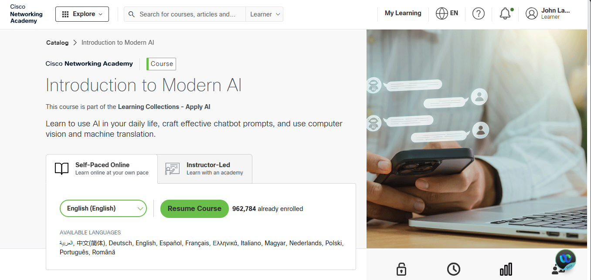
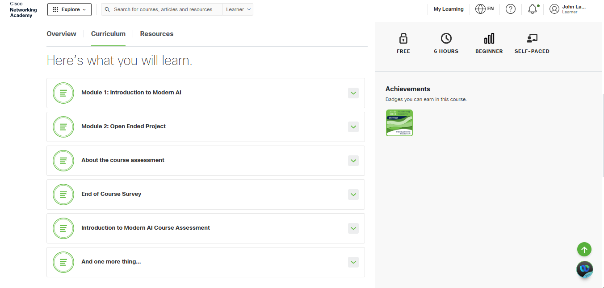
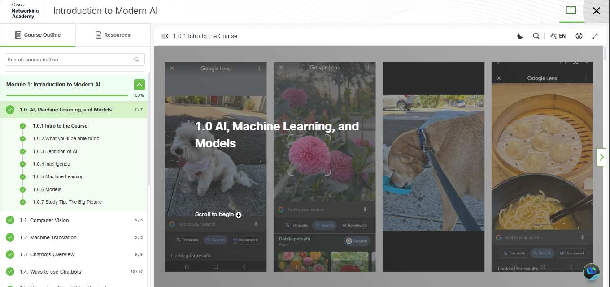
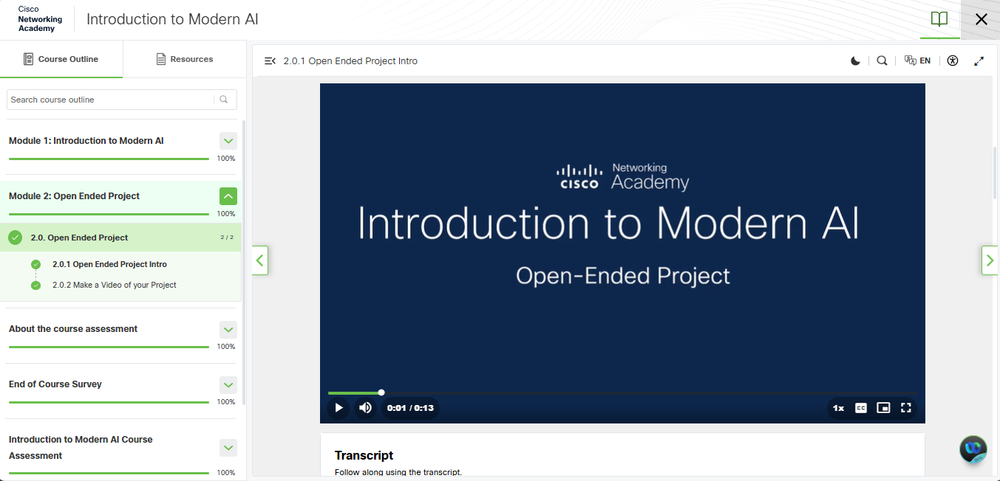
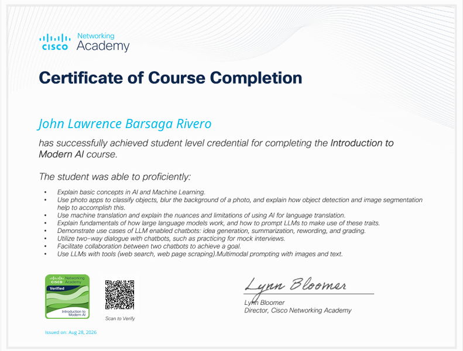
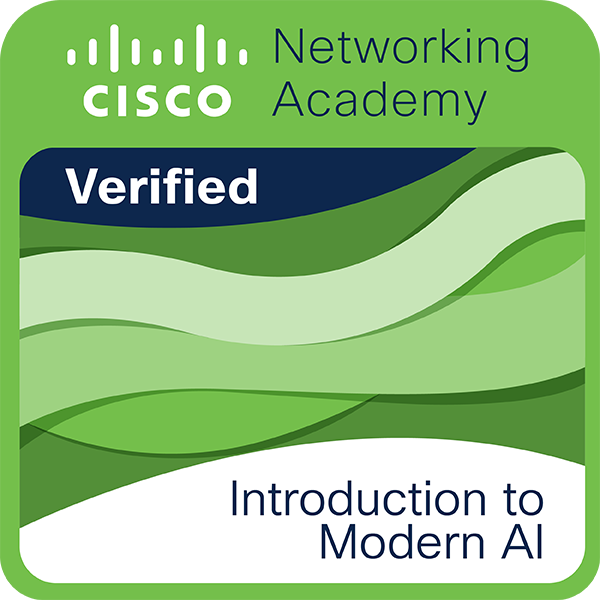

I completed the Introduction to Modern AI course from Cisco Networking Academy. In this course, I learned the basic concepts of Artificial Intelligence, Machine Learning, and how AI models are used in different technologies.
Throughout the course, I learned about topics such as computer vision, machine translation, chatbots, and AI models. I learned how AI can recognize and understand images, translate languages, and help people with different tasks. I also learned how chatbots and Large Language Models (LLMs) can be used for generating ideas, summarizing information, rewriting text, and other useful activities.
One part of the course that I found interesting was the open-ended project. It gave me a chance to apply what I learned and understand how AI can be used in real-life situations. It also helped me become more comfortable with exploring and using AI tools.
Overall, this course gave me a better understanding of modern AI and how it can be useful in school, work, and everyday life. I also learned that AI should be used responsibly and properly. Completing this course was a helpful experience, and I can use what I learned in my future studies and projects.




View PDF
Verify My Badge